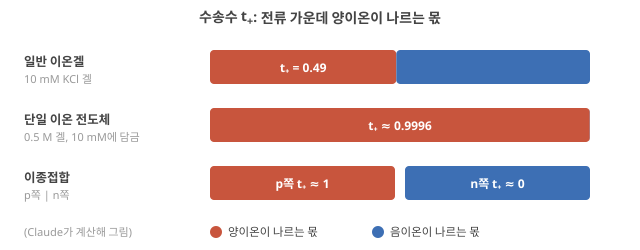

Day 45. 세 계단(이온겔·단일 이온 전도체·이종접합)과 수송수, 폴더의 이종접합이 보인 것
Phase 4 · 왜 이온성 고분자인가
이번 질문 일반 이온겔·단일 이온 전도체·이종접합은 '누가 움직이고 누가 묶였나'에서 어떻게 다르고, 수송수 t₊가 바뀌는 경계에서 이온은 얼마나 쌓이거나 비나(δ × I/F)? 폴더의 이종접합 device는 정류·고갈·시간상수를 어디까지 보였나?
왜 배우나 정류비가 어디서 오는지를 t₊와 고정 전하로 설명하고 증거가 직접인지 가른다.
오늘의 장면 전압 극성·전류 I → 경계에서 t₊ 변화 → 이온 축적·고갈 → 정류비·고갈층·PPF·PPD τ
오늘 반드시 일반 이온겔(t₊ ≈ 0.49), 단일 이온 전도체(t₊ ≈ 1), 이종접합의 차이는 누가 움직이고 묶였나이며 t₊ 변화가 정류와 기억을 함께 만든다.
나중에 봐도 됨 TOF-SIMS 해석 · 같은 부호 접합 대조 설계 · PPF·PPD τ 비교
이후 쓰이는 곳 Day 47–48 논문 평가 표 · Day 53–56 같은 부호 대조
지난 학습 복습
지난 학습 단위(Day 44 · 기억 과제에서 conductance의 최적점, 질문 바꾸기와 최소 필요 conductance)의 핵심을 다른 예로 확인합니다. 고르는 즉시 맞았는지와 이유가 보입니다. 틀려도 아래 학습자료는 그대로 열려 있고, 틀린 문제에는 다시 볼 곳이 붙습니다.
사전 테스트 (선택)
사전 테스트 펼치기 · 배우기 전에 짐작해 보는 문제 (선택)
학습자료
Phase 4(Day 35–46)의 마지막 Day입니다. 이번 질문은 고분자 이온 소재 연구에 가장 가깝습니다. Single-ion conductor, polyelectrolyte, heterojunction은 어떤 고유한 이점이 있나? 그리고 일반 이온겔보다 반드시 유리한가? 이 질문에 답한 뒤, Day 35–46 전체를 하나의 표로 묶습니다. 이온 물리 → 계산 primitive(계산을 이루는 기본 부품, 뒤에서 정의)의 대응표입니다.
이번 내용은 내가 직접 다뤄 온 계(음이온성·양이온성 polyelectrolyte heterojunction, 이온 다이오드(ionic diode), 고갈층(depletion layer))와 겹칩니다. 아래의 그림과 계산은 그 경험을 정답으로 삼지 않고, 폴더 원문과 단순 모형으로 다시 세운 것입니다. 내 데이터와 다르면 내 데이터가 우선입니다.
이 주제의 질문 순서 — 이번 Day 45에서는 구간 1–2만 읽습니다. 나머지는 Day 46에서 이어집니다(구간 번호는 원래 한 묶음이던 순서 그대로입니다).
- 일반 이온겔, 단일 이온 전도체(폴리전해질), 이종접합은 무엇이 다른가? 전류의 몇 할을 어느 이온이 나르고(수송수), 그것이 어디에서 이온을 쌓고 비우나? → 구간 1
- 이종접합의 정류·고갈 비선형·다중 시간상수는 어디서 오고, 연구는 어디까지 왔나? → 구간 2
- 폴리전해질·이종접합은 일반 이온겔보다 반드시 유리한가? 어떤 조건에서 유리하고 어떤 조건에서 불리한가? (Day 46에서)
- 정류, 고갈, 다중 시간상수는 각각 어떤 계산 primitive가 되나? (Day 46에서)
- Phase 4 종합: 이온 물리에서 계산 primitive까지 한 장으로, 그리고 이 Phase에서 바뀐 가정은? (앞 네 질문의 기본 예제를 이해한 뒤 Phase 전체를 되짚는 자리입니다.) (Day 46에서)
1. 세 계단: 일반 이온겔 → 단일 이온 전도체 → 이종접합
이 구간을 읽고 나면 일반 이온겔, 단일 이온 전도체(폴리전해질), 이종접합의 차이를 "누가 움직이고 누가 묶여 있나"와 수송수(숫자 하나)로 설명하고, 수송수가 바뀌는 경계에서 이온이 쌓이거나 빈다는 것을 계산해 이종접합이 정류하는 이유를 단계별로 말할 수 있다.
상황. 내 polyelectrolyte 접합은 한쪽 방향으로만 전류를 잘 통과시킵니다. 일반 이온겔은 이런 정류를 못 하는데, 접합의 어디에서 무엇이 달라져 정류가 생기는지를 수송수라는 숫자 하나로 설명합니다.
Single-ion conductor·polyelectrolyte·heterojunction 정류
① 왜 필요한가. 이온 device의 재료를 고를 때 "이온겔이냐 폴리전해질이냐"는 단순한 재료 선택이 아니라, 어떤 이온이 움직일 수 있느냐의 선택입니다. 그것이 Day 37–38에서 본 메커니즘(EDL, 농도 분극, 고갈) 가운데 무엇이 일어날지를 정합니다(농도 분극).
② 무엇인가: 세 계단(그림 1을 먼저). 그림 1의 세 패널 (a)–(c)를 차례로 봅니다. 동그라미는 움직이는 이온, 네모는 고분자 사슬에 붙어 움직이지 못하는 전하입니다(빨강 +, 파랑 −). 볼 것은 칸마다 어느 색의 동그라미가 있느냐입니다. 아래 줄의 \(t_+\)(수송수: 전류 가운데 양이온이 나르는 몫)는 바로 뒤의 "수송수" 상자에서 정의하니 지금은 건너뛰어도 됩니다.

- 일반 이온겔(그림 1(a)): 고분자망에 이온액체(양이온과 음이온만으로 된 상온의 액체 염, 예: EMIM⁺와 TFSI⁻)나 염 용액이 스며 있습니다. 양이온과 음이온이 모두 움직입니다. 이 교재에서는 소금물을 머금은 하이드로겔도 두 이온이 다 움직인다는 점에서 같은 칸에 넣어 '일반 이온겔'이라 부르고, 숫자 예에는 10 mM KCl 겔을 씁니다. 전류를 흘리면 한쪽에는 양이온이, 다른 쪽에는 음이온이 쌓여 농도 차가 생깁니다.
- 단일 이온 전도체(single-ion conductor, 그림 1(b)): 한쪽 부호의 이온이 고분자 사슬에 공유결합으로 묶여 움직이지 못하고, 반대 부호의 이온(반대이온, counter-ion)만 움직입니다. 작은 예: 사슬에 술폰산기(–SO₃⁻)가 붙은 겔 1 L 안에 술폰산기가 0.5 mol 있으면 고정 전하 농도 \(X\) = 0.5 M이고, 겔이 전기적으로 중성이려면 움직이는 양이온(예: K⁺)이 약 0.5 mol 함께 들어 있어야 합니다. 이 0.5 M 겔을 이번 Day 끝까지 예제로 씁니다. 고분자에 전하가 붙은 폴리전해질(polyelectrolyte)이 대표적이고, 이온액체 단위를 고분자로 만든 poly(ionic liquid, PIL)도 같은 범주입니다. Balqis 2026은 이것을 "움직이는 이온이 전하를 띤 고분자 주사슬에 짝이온으로 매인" 재료로 설명합니다. Balqis 2026, p.27067
- 이종접합(heterojunction, 그림 1(c)): 고정 음전하 재료(양이온만 나름)와 고정 양전하 재료(음이온만 나름)를 맞붙인 것입니다. 작은 예: 위의 –SO₃⁻ 겔과, 사슬에 4급 암모늄기(–NR₃⁺)가 붙은 겔을 붙인 것. 폴더의 이온 다이오드 연구가 이런 짝(PSPA/PDADMAC 하이드로겔)을 썼습니다. Han 2023, p.9 반도체의 p–n 접합에 빗대어 양이온이 움직이는 쪽을 p형, 음이온이 움직이는 쪽을 n형이라 부르기도 합니다. ★ 닮은 점은 정류라는 결과이고, 다른 점은 운반자가 전자·정공이 아니라 이온이며 고갈·회복에 이온이 실제로 움직이는 시간(대략 \(L^2/D\), 확산 시간 τ_diff ~ L²/D)이 걸린다는 것입니다. Wang 2025는 음전하 망과 양전하 망이 만나는 이온 p–n 접합에서 "두 겹의 정전기적 반발이 이온을 한 방향으로만 지나가게 해" 독특한 정류가 생긴다고 정리합니다. Wang 2025 (Chem. Soc. Rev.), p.306
③ 무슨 일이 어떤 순서로(이종접합). 먼저 두 말을 정합니다. 순방향(forward bias)은 p형 쪽 전극에 (+), n형 쪽에 (−)를 걸어 두 반대이온을 접합 쪽으로 미는 극성이고, 역방향(reverse bias)은 그 반대로 두 반대이온을 접합에서 떼어 내는 극성입니다. 아래 단계가 각 극성에서 접합에 무슨 일이 생기는지 따라갑니다.
단계 1 — 왜 한쪽 이온만 들어가나. 고정 전하는 같은 부호의 이동 이온(공이온, co-ion)을 밀어냅니다(Donnan 배제). Day 37–38에서 계산했듯 고정 전하 \(X\)인 겔을 바깥 염 농도 \(c_s\)인 용액에 담그면 겔 속 공이온은 약 \(c_s^2/X\)입니다(Donnan 배제). 0.5 M 겔을 10 mM KCl에 담그면 \((0.01)^2 \div 0.5\) = 0.0002 M = 0.2 mM, 바깥의 1/50입니다. 그래서 p형 쪽에는 사실상 양이온만, n형 쪽에는 음이온만 움직일 수 있습니다.
단계 2 — 순방향(그림 1(c)의 전극 극성을 뒤집은 경우). p형에 (+), n형에 (−)를 걸면 두 쪽의 반대이온이 모두 접합을 향해 밀려 접합에 쌓입니다. Conductance가 오르고 전류가 큽니다.
단계 3 — 역방향(그림 1(c) 그대로). 전압을 뒤집으면 두 반대이온이 모두 접합에서 멀어지고, 접합을 다시 채울 이온이 없습니다(공이온은 배제되므로). 접합은 이온이 빠진 고갈층이 되어 전류가 작습니다.
단계 4 — 정류와 기억. 같은 크기의 전압에서 방향에 따라 전류가 다르니 정류(비선형)이고, 쌓이고 빠지는 데 이온이 실제로 움직여야 하니 시간이 걸리고 이력이 남습니다(기억). Day 37–38의 장난감 모형이 이 물리를 상태 하나로 흉내 낸 것이었습니다(장난감 접합 모형).
④ 이름과 정확한 뜻. 단일 이온 전도체 = 한 부호의 이온만 움직이는 이온 전도체. 폴리전해질 = 사슬에 이온기가 붙은 고분자(그 반대이온이 움직임). 이종접합 정류 = 고정 전하의 부호가 다른 두 재료의 접합에서, 고갈과 축적이 방향에 따라 갈려 전류가 한쪽으로 잘 흐르는 것.
⑤ 뉴로모픽·reservoir computing과의 연결. 일반 이온겔은 양·음이온이 다 움직이므로 전극에 EDL을 만들고 덩어리에 농도 분극을 만들지만, 정류를 만들려면 계면·형상의 비대칭이 따로 필요합니다. 이종접합은 재료의 고정 전하 자체가 비대칭을 주므로, 정류(비선형)와 고갈·회복(기억)이 접합 하나에서 함께 나옵니다. 이것이 이번 질문의 "고유한 이점" 후보입니다. 그것이 실제로 이점인지는 뒤의 조건표에서 조건을 붙여 봅니다.
⑥ 짧은 확인. 단일 이온 전도체 두 개를 같은 부호끼리(둘 다 고정 음전하) 붙이면 정류가 생길까요? (답: 이종접합의 정류는 거의 생기지 않는다. 양쪽 모두 양이온이 움직여 역방향에서도 접합이 고갈되지 않는다. 뒤의 '고갈층을 직접 보았나'에서 이 비교를 실제로 한 대조 실험을 봅니다.)
1-1. 수송수: 전류의 몇 할을 누가 나르나
수송수(transference number, t): 전류 가운데 각 이온이 나르는 몫
① 왜 필요한가. 앞의 세 계단 그림은 "누가 묶이고 누가 움직이나"를 그림으로 보였습니다. 이것을 숫자 하나로 적으면 세 재료를 같은 눈금에 놓을 수 있고, 전류를 흘릴 때 어디에서 이온이 쌓이고 비는지(농도 분극, 농도 분극·ion depletion)를 미리 셀 수 있습니다. 그 숫자가 수송수입니다.

② 무엇인가. Day 43–44에서 conductance는 움직이는 이온 종류마다의 몫 \(n_i|z_i|e\mu_i\)를 더한 것이었습니다(\(n\) 움직일 수 있는 이온의 수, \(|z|e\) 이온 하나의 전하 크기, \(\mu\) 이동도, 이온전도도). 그 몫 하나를 전체로 나눈 것이 그 이온의 수송수(transference number, 운반수라고도 함)입니다.
\[ t_i = \frac{n_i |z_i| e \mu_i}{\sum_j n_j |z_j| e \mu_j}, \qquad \sum_i t_i = 1 \]
- 뜻: 전류 가운데 이온 \(i\)가 나르는 비율(0–1, 단위 없음). 양이온 수송수 \(t_+ = 0.7\)이면 전류의 70%를 양이온이, 30%를 음이온이 나릅니다. 1가 염이면 \(t_- = 1 - t_+\).
- 고정 전하는 움직이지 않으므로(\(\mu = 0\)) 몫이 0입니다. 고정 전하가 많은 재료일수록 반대이온 한 종이 전류를 거의 다 나릅니다.
- 수송수는 재료만의 상수가 아닙니다. 바깥 염 농도·온도에 따라 바뀝니다(뒤의 Donnan 계산).
- 기호 주의. 이번 Day의 \(t_+\), \(t_-\)는 수송수이고 시간이 아닙니다. 시간은 아래첨자 없는 \(t\)나 간격 \(\Delta t\)로 쓰고, 경계 양쪽 수송수의 차는 \(\delta\)로 씁니다(아래 ④에서 계산).
③ 세 재료의 숫자(그림 2).
- 일반 전해질·이온겔: 10 mM KCl 물에서 K⁺의 몫은 0.074 S/m, Cl⁻의 몫은 0.076 S/m였습니다(10 mM KCl). \(t_+ = 0.074 \div 0.150 \approx 0.49\), 거의 반반입니다(25 °C 무한 희석 몰 이온 conductance K⁺ 73.5, Cl⁻ 76.4 S·cm²/mol로 계산해도 0.49 물성표 값, 폴더 밖). 이온액체를 품은 이온겔도 두 이온이 다 움직이므로 \(t_+\)는 0과 1 사이이고, 값은 두 이온의 이동도 비로 정해집니다(이온액체별 값은 여기서 다루지 않습니다).
- 단일 이온 전도체: 0.5 M 겔을 10 mM KCl에 담그면, 단계 1의 어림대로 겔 속 Cl⁻는 0.2 mM이고 K⁺는 고정 전하만큼에 공이온만큼을 더한 500.2 mM입니다(이상 Donnan, 뒤의 Donnan 곡선에서 다시 봅니다). ★ 겔 속 두 이온의 이동도가 같다고 어림하면 \(t_+ = 500.2 \div (500.2 + 0.2) = 0.9996\). 용매도 공이온도 없는 무용매 PIL이라면 이상적으로 \(t_+ = 1\)입니다. 물속에서 쓰는 이온교환막(ion-exchange membrane; 양이온 교환막·음이온 교환막, 위 첫 영상)이 바로 이런 재료이고, 막의 "선택도"는 반대이온의 수송수로 잽니다(뒤의 막 전위 측정).
- 이종접합: 한 device 안에서 수송수가 접합을 경계로 뛴다는 것이 핵심입니다. p쪽은 \(t_+ \approx 1\), n쪽은 \(t_+ \approx 0\)(전류를 거의 음이온이 나름)입니다.
④ 수송수가 바뀌는 경계에서 이온이 쌓이거나 빈다.
같은 전류 1 µA를 흘립니다. 같은 KCl 겔 두 조각의 경계, KCl 겔과 양이온 선택 겔의 경계, p | n 접합 가운데 이온이 쌓이지도 비지도 않는 곳은? 가장 빨리 쌓이거나 비는 곳은? 먼저 적고 아래 그림과 단계를 보세요.
그림 3을 먼저 봅니다. 네 줄이 네 가지 경계(같은 겔끼리, KCl 겔 → 양이온 선택 겔, p | n 순방향, p | n 역방향)이고, 가운데 점선이 경계입니다. 화살표 길이는 1초에 경계로 들어오거나 경계에서 나가는 이온의 양이고(빨강 양이온, 파랑 음이온), 오른쪽의 \(\delta\)는 '전류가 들어오는 쪽 \(t_+\) − 나가는 쪽 \(t_+\)'입니다. 아래 단계 1–4가 이 화살표를 차례로 셉니다.

단계 1 — 양이온 세기. 전류 \(I\)가 영역 1에서 영역 2로 흐릅니다. 양이온은 전류와 같은 방향으로 움직이므로, 1초에 영역 1에서 경계로 \(t_+^{(1)} I/F\) mol이 들어오고 영역 2로 \(t_+^{(2)} I/F\) mol이 나갑니다. \(F\) = 96485 C/mol(패러데이 상수, Faraday constant)은 1가 이온 1 mol이 나르는 전하라서, \(I/F\)는 "1초에 지나가는 전하를 이온 몰수로 바꾼 값"입니다.
단계 2 — 음이온 세기. 음이온은 전류와 반대로 움직입니다. 영역 2에서 경계로 \((1 - t_+^{(2)}) I/F\)가 들어오고, 영역 1로 \((1 - t_+^{(1)}) I/F\)가 나갑니다.
단계 3 — 정리. 들어온 것에서 나간 것을 빼면 양이온과 음이온이 같은 양씩 남거나 모자랍니다. 그래서 경계는 전기적으로 중성인 채로 염이 쌓이거나 빕니다.
\[ \frac{dN_{\text{염}}}{dt} = \delta\,\frac{I}{F}, \qquad \delta = t_+^{(1)} - t_+^{(2)} \]
\(N_{\text{염}}\)은 경계에 쌓인 염의 몰수, \(t\)는 시간, \(\delta\)는 "전류가 들어오는 쪽 \(t_+\) − 나가는 쪽 \(t_+\)"입니다. 양수면 쌓이고(축적), 음수면 빕니다(고갈). \(\delta = 0\)이면 전류가 아무리 커도 쌓이지 않습니다. 쌓인 것을 확산이 다시 퍼뜨리는 효과는 여기서 뺐습니다(그것이 회복, 곧 기억이 사라지는 쪽입니다).
단계 4 — 숫자(그림 3). \(I\) = 1 µA이면 \(I/F = 10^{-6} \div 96485 = 1.04\times10^{-11}\) mol/s, 곧 1초에 약 10 pmol입니다.
- 같은 겔끼리: \(\delta = 0.49 - 0.49 = 0\), 쌓이지 않습니다.
- KCl 겔 → 양이온 선택 겔: \(0.49 - 1 = -0.51\), 1초에 약 5.3 pmol씩 경계가 빕니다(Day 37–38 영상의 '이온 농도 분극').
- p | n 순방향: \(1 - 0 = +1\), 10.4 pmol/s씩 쌓입니다. 역방향이면 전류가 n에서 p로 흐르므로 \(0 - 1 = -1\), 10.4 pmol/s씩 빕니다.
같은 크기의 전류에서 부호만 바꿔도 쌓임과 빔이 뒤집히는 것이 정류와 기억의 출발점입니다. 같은 부호끼리 붙인 p | p는 \(1 - 1 = 0\)이라 정류가 없습니다(앞의 짧은 확인, 같은 부호 접합은 정류가 없다는 결론과 같습니다).
⑤ 그래서 재료마다 무엇이 바뀌나.
| 재료 | 움직이는 이온 | \(t_+\) (예) | 수송수가 뛰는 곳 = 분극이 생기는 곳 | 정류 | 기억의 자리 |
|---|---|---|---|---|---|
| 일반 이온겔 | 양·음이온 | 약 0.49 (10 mM KCl) | 전극 앞뿐(전극은 이온을 통과시키지 않거나 한 종만 받아들임) | 재료만으로는 없음. 전극·형상의 비대칭이 따로 필요 | 전극의 EDL과 그 회복(전기이중층(EDL) 충전, 계면 충전 시간 λ_D·L/D) |
| 단일 이온 전도체 | 반대이온만 | 약 1 | 덩어리 안은 \(\delta = 0\)이라 농도 차가 생기지 않고, 전극 앞에서만 | 혼자서는 없음 | 전극 앞(반대이온이 모이거나 떠나 고정 전하가 드러난 층) 해석 |
| 이종접합 | p쪽 양이온, n쪽 음이온 | 1 → 0 | 재료 한가운데의 접합(\(\delta = \pm 1\), 전류 방향에 따라 부호가 바뀜) | 있음 | 접합의 축적·고갈(장난감 접합 모형) |
단일 이온 전도체 줄의 "덩어리에 농도 차가 생기지 않는다"는 단계 4의 p | p와 같은 계산입니다(덩어리 어디를 잘라도 양쪽 \(t_+\)가 같아 \(\delta = 0\)). 반대로 말하면 수송수 1인 재료는 덩어리 안에서 농도 분극으로 생기는 느린 기억도 없습니다. 기억이 필요하면 그것을 어디에 둘지(전극 앞이나 접합)를 따로 설계해야 합니다 해석.
심화 · 리튬 전지 전해질에서 이미 알려진 같은 결과
"수송수 1이면 덩어리에 농도 차가 생기지 않는다"는 리튬 전지 전해질에서 오래 알려진 결과입니다. Doyle·Fuller·Newman(Electrochim. Acta 39, 2073, 1994)의 전지 모사(시뮬레이션)에서 수송수 1인 고분자 전해질은 conductance가 10배 낮아도 수송수 0.2인 전해질보다 높은 방전 속도에서 성능이 좋았고, 그 이유는 수송수 0.2인 쪽에 큰 농도 차가 생겨 전해질이 고갈되기 때문이었습니다 폴더 밖 문헌, Claude는 초록만 확인. 전지에서는 이것이 장점(고갈 없음)이고, 기억을 원하는 뉴로모픽 device에서는 같은 성질이 "덩어리에는 느린 기억이 없다"로 읽힙니다 해석.
⑥ 뉴로모픽과의 연결. 이종접합의 이점을 수송수로 말하면 이렇습니다. 고정 전하의 부호를 바꿔 배치하면 분극이 일어날 자리(\(\delta\)가 0이 아닌 곳)를 전극이 아니라 재료 안의 원하는 곳에 둘 수 있고, 그 자리의 쌓임·빔이 전압 부호에 따라 갈립니다 해석. 일반 이온겔로 같은 일을 하려면 전극이나 형상의 비대칭을 따로 만들어야 합니다. 그 이점이 실제로 있는지 보이는 실험은 뒤의 '이점을 실험으로 보이려면'에 모았습니다.
- 이온겔: 양·음이온 모두 이동. 단일 이온 전도체(폴리전해질·poly(ionic liquid)): 반대이온만 이동 Balqis 2026, p.27067. 예제: 고정 전하 0.5 M 겔, 10 mM에서 공이온 0.2 mM.
- 이종접합: 고정 전하의 부호가 다른 두 재료. 순방향 축적, 역방향 고갈 → 정류 + 기억 Wang 2025 (Chem. Soc. Rev.), p.306.
- 같은 부호끼리 붙이면 접합 정류는 거의 없다(같은 재료 대조군).
- 수송수 \(t_i\) = 이온 \(i\)의 conductance 몫 ÷ 전체. 10 mM KCl 0.49, 0.5 M 고정 전하 겔(10 mM) 0.9996, 이종접합은 접합에서 1 → 0으로 뛴다.
- 경계에 쌓이는 속도 = \(\delta \times I/F\), \(\delta\) = 들어오는 쪽 \(t_+\) − 나가는 쪽 \(t_+\). 1 µA에서 p | n은 ±10.4 pmol/s, 같은 겔끼리는 0(Claude 계산).
2. 이종접합의 정류·고갈·다중 시간상수: 폴더는 어디까지 보였나
이 구간을 읽고 나면 폴더의 이종접합 device들이 정류·고갈·시간상수에 대해 무엇을 보였는지(그리고 정류비가 device마다 얼마나 다른지) 숫자로 말하고, 고갈을 직접 본 증거와 간접 증거를 구분하며, 이 소재 계열의 연구 현황·한계·넘을 과제를 적을 수 있다.
앞에서는 이종접합이 왜 정류하고 기억하는지를 수송수와 \(\delta \times I/F\)로 셌습니다. 그것은 모형의 이야기입니다. 이제 폴더의 실제 device가 무엇을 보였는지 세 가지로 나눠 봅니다: 고갈층을 직접 보았나, 정류는 얼마나 강한가, 시간상수는 몇 개인가.
고갈층을 직접 보았나. 이종접합 논문 대부분은 고갈을 전류·임피던스로 간접 추론합니다. Lee 2026 (AFM)은 히알루론산–키토산 하이드로겔 접합의 역방향 저항이 같은 재료 접합의 약 35배라는 임피던스 비교로 고갈을 뒷받침했습니다(앞에서 던진 같은 부호 접합 대조, 접합 device들). Lee 2026 (AFM), p.4 이보다 분포 자체에 다가간 측정이 하나 있습니다. Balqis 2026은 폴리음이온 PIL(poly[EMIm][SPA])과 폴리양이온 PIL(poly[BVIm][TFSI])을 쌓은 접합의 깊이에 따른 성분 분포를 비행시간 이차이온 질량분석(TOF-SIMS: 이온빔으로 표면을 깎아 가며 깊이별 성분을 재는 방법)으로 쟀습니다.
원문 그림 읽는 법(아래 Balqis 2026 Fig. 1c–e): c의 가로축 '스퍼터 시간'은 이온빔으로 시료를 깎아 들어간 시간이라 깊이로 읽습니다. 시료는 폴리음이온 PIL 위에 폴리양이온 PIL을 스핀코팅한 얇은 막이어서, 오른쪽으로 갈수록 위층(폴리양이온 쪽)에서 아래층(폴리음이온 쪽)으로 들어갑니다. Balqis 2026, p.27069 세로축은 검출된 음이온 세기(로그 눈금)입니다. 파랑 CF₃SO₂N⁻은 위층의 이동 음이온 TFSI⁻, 주황 SO₃⁻는 아래층 사슬에 묶인 음이온의 표지입니다. d와 e는 같은 두 이온의 3차원 분포이고, Z축(아래 방향)이 깊이입니다.

그림이 보여 주는 것과 못 보여 주는 것. 접합면 근처에서 한쪽 이온 신호가 줄고 다른 쪽이 늘어나는 구간이 있고, 저자들은 그 사이를 이온 고갈층(IDL)으로 표시합니다. Balqis 2026, p.27067, Fig. 1 다만 이것은 한 시료의 분포 하나이고, 전압을 바꿔 가며 잰 것이 아니며, 저자들도 고갈층의 폭을 정량하지 못했다고 씁니다. Balqis 2026, p.27069 전압에 따라 고갈이 달라진다는 근거로 저자들은 공초점 라만 측정을 듭니다 Balqis 2026, p.27071. 또 TOF-SIMS는 전압을 끈 뒤 진공에서 재는 방법이라, 동작 중의 분포와 같다고 보려면 조심해야 합니다. 해석
정류는 얼마나 강한가. 정류비(rectification ratio: 같은 크기의 순방향·역방향 전압에서의 전류 비, 농도 분극·ion depletion)는 device마다 크게 다릅니다.
| Device | 재료 | 정류·비대칭의 숫자 | 출처 |
|---|---|---|---|
| 이온 다이오드(침전 연구) | PSPA/PDADMAC 하이드로겔, 10 mM KCl | 정류비 \(I(+1\,\text{V})/I(-1\,\text{V}) > 10\)인 device만 실험에 사용 | Han 2023, p.9 |
| HA–CS 접합 | 천연 고분자 하이드로겔, 10 mM KCl, pH 6 | 역방향 저항이 같은 재료 접합의 약 35배 | Lee 2026 (AFM), p.4 |
| PIL 이종접합 | 무용매 poly(ionic liquid), PEGDA 가교 | 20 °C에서 정류비 2.5 | Balqis 2026, p.27071 |
같은 "이종접합"이라도 폴더에 보고된 정류비는 2.5(Balqis)에서 10 이상(Han의 선별 기준)까지 흩어져 있고, 같은 조건에서 나란히 잰 값은 없습니다. 측정 조건도 정류비를 바꿉니다. Lee 2026 (AFM)은 전압을 훑는 속도가 빨라질수록 정류비와 고리 넓이가 함께 줄어 직선에 가까워졌다고 보고합니다. Lee 2026 (AFM), p.3 Day 37–38의 장난감 모형에서 아주 빠르게 훑으면 I–V가 직선이 되던 것과 같은 방향입니다(장난감 접합 모형). Balqis 2026은 PIL의 정류비가 온도가 오를수록 커졌고(−20–100 °C에서 측정), 낮은 온도에서는 사슬의 분절 운동이 제한된다고 설명합니다. Balqis 2026, p.27071 Day 41–42에서 본 Tg와 사슬 운동성이 정류에도 닿는 것입니다(유리전이온도(Tg)·사슬 운동성·가교밀도).
시간상수는 여럿이고, 극성에 따라 다르다. 먼저 두 용어입니다. 두 펄스를 짧은 간격으로 주면 둘째 응답이 커지는 것이 쌍펄스 촉진(paired-pulse facilitation, PPF), 작아지는 것이 쌍펄스 억제(paired-pulse depression, PPD)입니다. 두 펄스 사이 간격을 \(\Delta t\)(여기서는 시간 간격)라 하고, 간격에 따른 지수 \((A_2 - A_1)/A_1\)(\(A_1\), \(A_2\): 첫째·둘째 응답)을 지수 함수 두 개의 합 \(C_1 e^{-\Delta t/\tau_1} + C_2 e^{-\Delta t/\tau_2}\)로 맞추면 시간상수 두 개(\(\tau_1\), \(\tau_2\))가 나옵니다. Day 10에서 PPF 곡선을 읽은 것과 같은 꼴입니다(PPF 곡선 읽기).
원문 그림 읽는 법(아래 Balqis 2026 Fig. 3a–f): 위 줄 b·c는 전압 방향에 따라 접합의 고갈층이 좁아지고 넓어지는 모식도, 아래 줄 d·e는 두 펄스를 30 ms 간격으로 줄 때 첫째 응답 \(A_1\)과 둘째 응답 \(A_2\)를 재는 법, f는 두 펄스 사이 간격 \(\Delta t\)를 바꿔 가며 잰 지수 \((A_2 - A_1)/A_1\)입니다. f에서 두 곡선이 0으로 다가가는 빠르기가 아래 문단의 시간상수입니다.

Balqis 2026은 이 맞춤으로 PPF는 21·36 ms, PPD는 15·6 ms를 얻었고, 두 방향의 시간상수가 다른 것을 "비대칭 변화"로 해석합니다. Balqis 2026, p.27072 같은 글의 유변학 측정(rheology: 재료에 작은 변형을 주고 응력이 풀리는 빠르기를 재는 측정)은 1 ms 이하의 빠른 이완과 100 s 이상의 느린 이완을 함께 보였습니다. Balqis 2026, p.27071 하이드로겔 P–M–N 접합(양이온 선택 겔–중성 겔–음이온 선택 겔, Day 37–38)에서도 1 V 단계에서 평형에 이르는 시간이 −1 V보다 길었습니다. Zhang 2024 (ACS Nano), p.15030 즉 이종접합은 쌓을 때와 비울 때의 시간이 다르고, 한 device 안에 서로 다른 시간척도가 여럿 있습니다. 이 '극성별 비대칭'과 '다중 시간상수'가 뒤의 계산 primitive로 이어집니다.
얼마나 빠른가. Balqis 2026은 기존 이온액체 기반 device가 이온을 움직이려면 1 s 폭의 펄스가, 이전 PIL device는 100 ms·6 V가 필요했던 데 비해 Balqis 2026, p.27067, 이 PIL 접합이 1 ms 미만의 바이어스에 반응하고 10 µs·5 mV 펄스에서 스파이크(짧은 전압 펄스 하나)당 2.96 fJ을 쓴다고 보고합니다. Balqis 2026, p.27066 2.96 fJ은 device 하나의 펄스 에너지이고 읽기·구동 회로는 포함하지 않습니다(Day 31–32).
착물화로 프로그래밍하는 계층 구조. 착물화(complexation)는 반대 전하를 띤 두 고분자(또는 고분자와 DNA처럼 전하를 띤 분자)가 서로 묶여 복합체를 만드는 것입니다(화학 상태를 바꾼다). 폴리양이온(PDDA)과 DNA의 계면 착물화로 만든 섬유는 다른 방향을 보여 줍니다. 느린 이완 시간상수가 최대 40분에 이르고, 펄스 수와 섬유 접점 수에 따라 몇 자릿수에 걸쳐 바뀌었습니다. Li 2026 (IPC fiber), p.1, 6 폴리전해질 착물화가 정류보다는 긴 기억의 프로그래밍에 쓰인 예입니다.
2-1. 연구는 어디까지 왔나 / 한계 / 넘어야 할 것
- 어디까지 왔나. 하이드로겔·천연 고분자·무용매 PIL·착물화 섬유까지 다양한 폴리전해질 접합에서 정류, 가소성(plasticity; 축적·고갈), 다중 시간상수가 보고되었습니다. 고갈층으로 해석되는 깊이 분포가 한 예 나왔고(폭 정량·전압 비교는 없음) Balqis 2026, p.27067, 27069, 반응 속도는 ms 아래까지 왔습니다.
- ★ 지금 한계. (a) 정류비가 device마다 2.5배–10배 이상으로 흩어지고 표준 조건(전압·속도·염 농도)이 없습니다. (b) Wang 2025가 지적한 대로 이종 계면이 이완을 정하는지, 느린 이온 역류가 정하는지가 불분명합니다. Wang 2025 (Chem. Soc. Rev.), p.316 (c) 폴더 논문들은 대부분 10 mM 같은 묽은 염에서 쟀고, 생체 조건(약 150 mM, pH 7.4)에서의 정류는 폴더에서 찾지 못했습니다(뒤의 Donnan 계산). (d) 계산 평가는 측정 상태를 신경망 시뮬레이션에 넣는 수준입니다(Balqis 2026의 이미지 인식 90% 등 Balqis 2026, p.27066).
- 넘어야 할 것. 동작 중 고갈층의 직접 관찰, 같은 조건(염·온도·전압)에서의 정류비·시간상수 표준 보고, 생리 조건의 성능, 그리고 다중 시간상수가 계산 지표(memory capacity MC, Memory capacity(MC) 측정 방법; information processing capacity IPC, 상태로 목표를 얼마나 되살리나)를 실제로 늘리는지의 측정. 가설
- 고갈에 가장 가까운 증거: TOF-SIMS 깊이 분포 하나(전압을 바꾼 비교·폭 정량은 없음) Balqis 2026, p.27067, 27069; 간접 증거: 같은 재료 대조군 대비 35배 저항 Lee 2026 (AFM), p.4.
- 정류비는 device마다 2.5배–10배 이상으로 흩어지고 훑는 속도에 따라서도 바뀐다 Lee 2026 (AFM), p.3. 시간상수는 여럿이고 극성에 따라 다르다(PPF 21·36 ms vs PPD 15·6 ms) Balqis 2026, p.27071–27072.
- 한계: 표준 조건 부재, 계면 vs 느린 역류의 역할 불분명, 생리 조건 데이터 부족.
학습 완료
이 학습 단위를 마쳤으면 눌러 주세요. 쓰기·영상·심화·추가 연습은 필요 없고, 퀴즈 점수와도 따로 기록됩니다. '완료'는 이 단위를 끝냈다는 표시이지 모든 내용을 완벽히 익혔다는 뜻이 아닙니다.